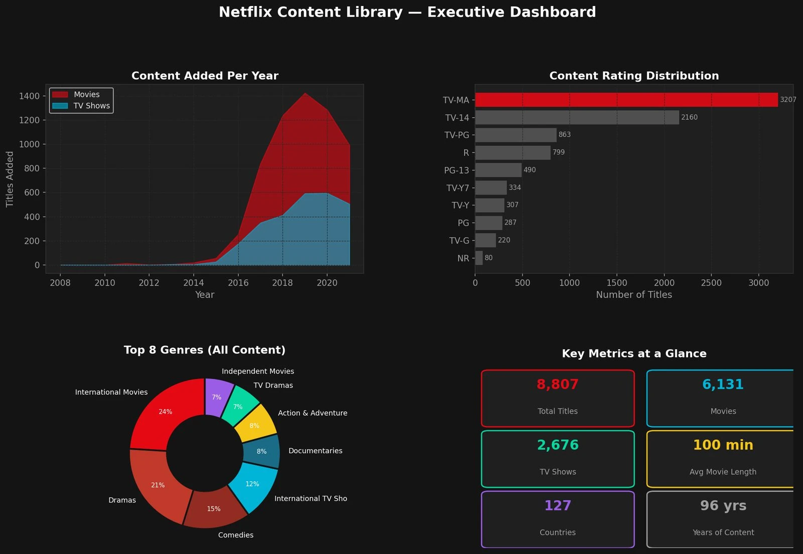

Netflix Content Library Analysis
An end to end look at Netflix's full catalogue: what it stocks, where it comes from and how fast it moves.

- 8,807titles in the catalogue
- 2 yrsmedian gap, film release to Netflix
- 31%of titles tagged International Movies
The question
The catalogue runs to nearly 9,000 titles across 126 countries. What is it actually made of, who is it for, and how quickly does content travel from release to the platform?
What I did
- Cleaned the full titles dataset in Python with Pandas, repairing broken ratings and dates.
- Split the multi-value genre and country fields so each could be counted properly.
- Built six Matplotlib and Seaborn dashboards: a month by year heatmap, genre and rating breakdowns, duration by audience, a country content mix and a release to addition age gap.
What I found
- The library skews adult, with TV-MA and TV-14 leading, and international: International Movies is the most common genre tag, on 31% of titles.
- It leans to film over TV, 6,131 titles against 2,676.
- Content moves fast: the median film is added two years after its release year, and shows land in the same year. Additions ramped hard from 2015 and peaked in 2019 at 2,016 titles.
A note on the data
Built on a public Netflix titles dataset. Independent portfolio project, not affiliated with or endorsed by Netflix.
- Python
- Pandas
- Seaborn
- EDA
- Data cleaning